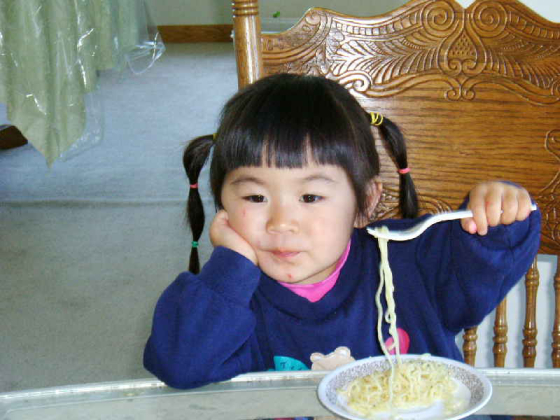
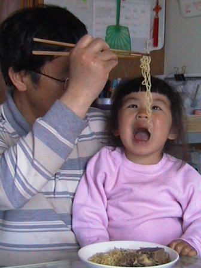

When I was little, I wanted to be white super bad. I think this is something that every Asian-American child, or honestly any minority child in America, goes through at some point. I rejected anything I deemed too foreign or too exotic by my white peers’ standards, anything that would set me apart. I begged my parents to make me “normal American food”, which, of course, they didn’t, and I hated it.
Now, I’m growing up and wanting to embrace my Chinese culture more than ever. I want to eat and learn those traditional Chinese family recipes I so rejected when I was young. However, my parents are divorced, and my mom (who I live with) is dating a white guy so now there is nothing but “normal American food” in the house, while my father lives elsewhere in the country and can’t cook for me. I keep pushing him to tell me his recipes so I can write them down, but of course, he doesn’t have recipes, as Chinese parents don’t.
 With this website, I can force his hand in teaching me what he knows, and anything he’s learned, so I can have it for the future- especially as a way of connection, in these turbulent times.
These recipes are written in a way that better reflects our family’s cooking style (which is to say generally just kind of reckless), as opposed to the standard cleaner, neater, more organized style of recipe writing. This is partially because this is just how I’m being taught the recipes, homestyle and “rustic” as some people might say it, and also because I don’t want to introduce more certainty than there really is in them. So apologies if they’re hard to follow, but this is just how loose Chinese cooking is, with lots of room for interpretation and experimentation.